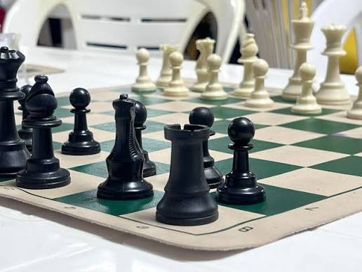
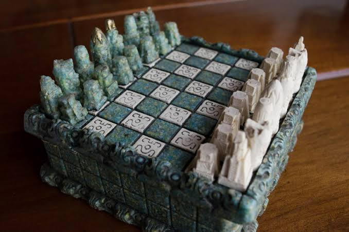
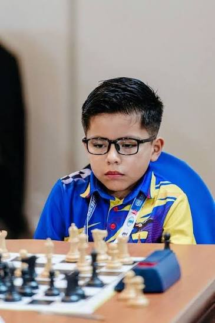

Estatutos sociales
Estatutos vigentes y sus reformas.
Documento pendienteClub Deportivo Especializado
Deporte, formación y comunidad.
Un espacio institucional para conocer el club, sus actividades y la información pública.
Conoce el club
Talentos Pichincha 01 Club Deportivo Especializado Formativo Talentos PichinchaEl Club Deportivo Especializado Talentos Pichincha promueve la práctica deportiva y el desarrollo de sus deportistas.
Club Deportivo Especializado Formativo Talentos Pichincha.
El club fomenta el ajedrez como disciplina deportiva y espacio de aprendizaje, estrategia y convivencia.
Ajedrez


Programa deportivo
El ajedrez forma parte de la actividad deportiva del club. La información de categorías, entrenamientos y competencias se publicará en esta sección.
Información institucional
La nómina de deportistas se publicará una vez que la información oficial esté disponible.
Programa deportivo
Los horarios y las categorías se comunicarán por los canales institucionales del club.
Competencias
El calendario vigente se incorporará cuando sea aprobado y comunicado por la organización.
Información institucional conforme al artículo 95.
Estatutos vigentes y sus reformas.
Documento pendienteReglamentos y documentos que respaldan su aprobación.
Documentación pendienteNómina actualizada y período de funciones.
Información pendienteListado de socios o filiales debidamente registrados.
Información pendienteCompetencias y programas deportivos del club.
Actualización institucionalCanales oficiales de contacto de la organización.
Información pendienteAjedrez.
Disciplina fomentadaInformación sobre las asignaciones presupuestarias.
Información pendienteInformación de los fondos obtenidos por autogestión.
Información pendienteNómina institucional de deportistas.
Información por publicarNómina del personal técnico.
Información pendienteInstalaciones que posee o administra y su ubicación.
Información pendienteMedidas de prevención y erradicación en actividades, entrenamientos y competiciones, con atención especial a niñas, niños, adolescentes y personas de atención prioritaria.
Medidas y documentos pendientesInformación que deba publicarse conforme a la ley y a las disposiciones del ente rector del deporte.
Información pendienteLos documentos y datos se incorporarán una vez que sean proporcionados y validados por el club.
Los canales oficiales del club se publicarán aquí.
Pendiente de información
Pendientes de información
Pendientes de información